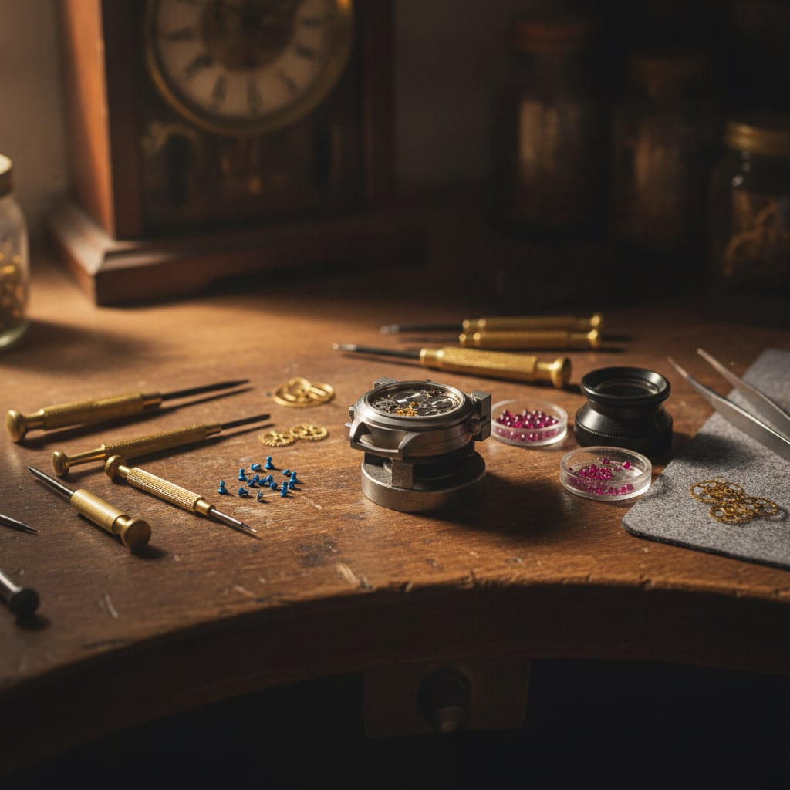
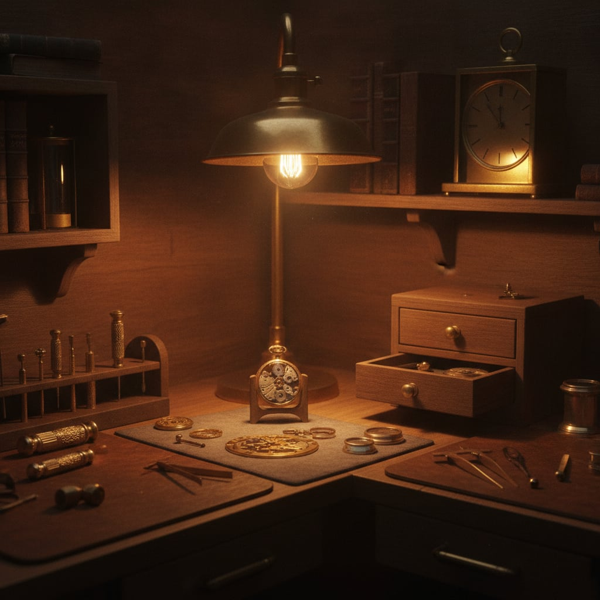
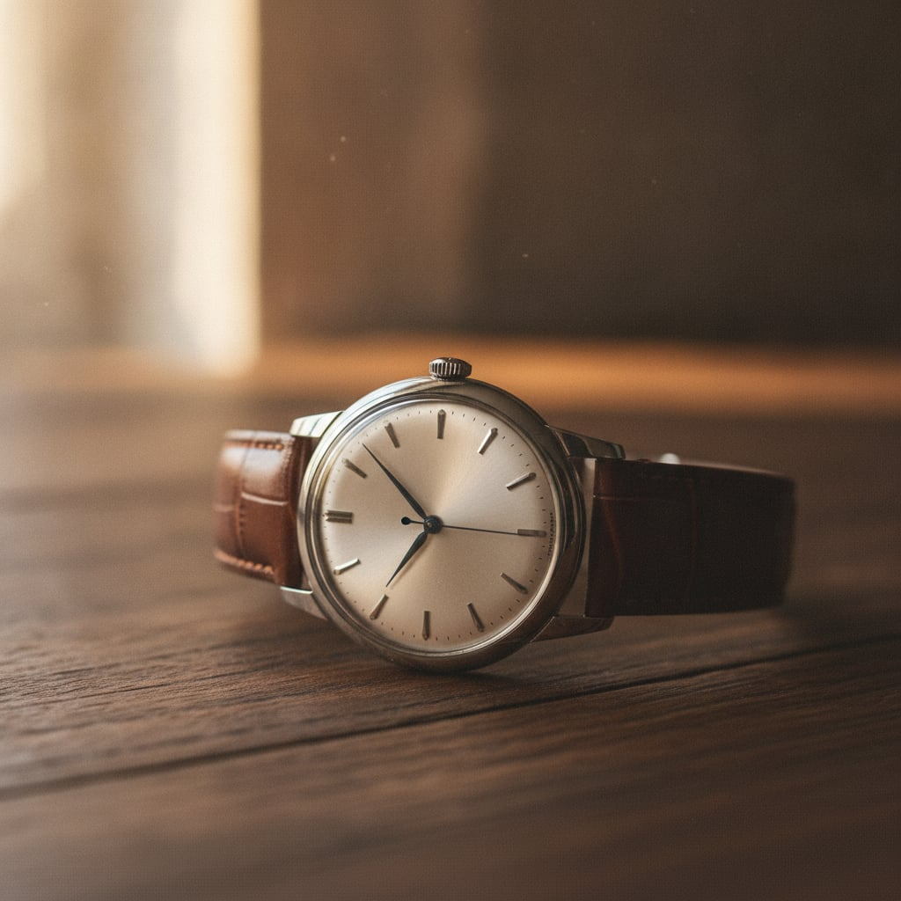
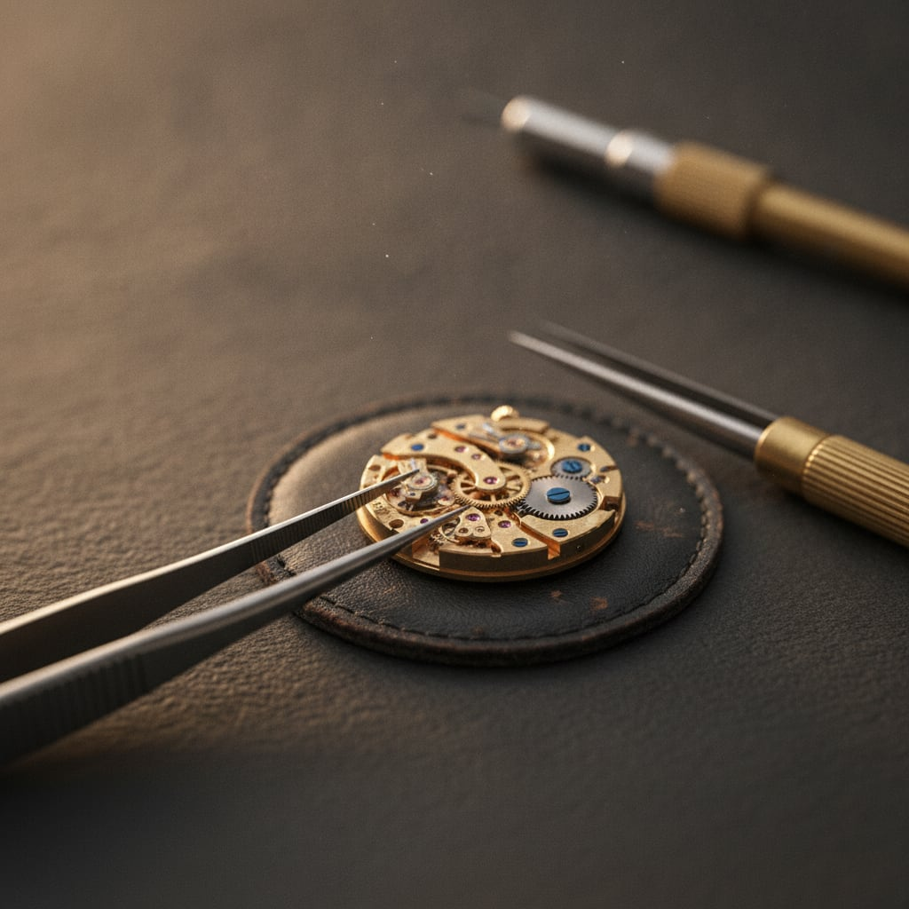

Tiranë · që nga 1938
Koha, e riparuar me kujdes.
Orëndreqës në qendër të Tiranës që nga viti 1938. Riparim dhe servisim orësh të çdo marke, me dorë të sigurt dhe katër breza përvojë.
Katër breza
mbi të njëjtin banak
Qinami hapi derën në vitin 1938, kur orët mateshin me sahat xhepi dhe çdo mekanizëm njihej me emër. Që atëherë, e njëjta zanat ka kaluar nga babai te djali, katër herë me radhë.
Sot punojmë në po atë cep të Rrugës së Durrësit. Orë moderne automatike, kuarc, ose një orë e vjetër familjare që do të punojë sërish: secila hapet, kontrollohet dhe rikthehet me të njëjtin durim.

Çfarë bëjmë
-
01
Riparim orësh
Diagnozë dhe riparim për orë mekanike, automatike e kuarc, të çdo marke.
-
02
Servisim mekanik
Çmontim i plotë, lubrifikim dhe rregullim i mekanizmit që ora të mbajë kohën saktë.
-
03
Ndërrim baterie
Bateri e re me mbyllje hermetike. Garanci 1 vit për punën tonë.
-
04
Pastrim & inspektim
Pastrim i mekanizmit dhe kontroll i gjendjes, që problemet të kapen herët.
-
05
Ndërrim xhami & rripi
Zëvendësim xhami të çarë dhe rripa lëkure ose metali sipas modelit.
-
06
Restaurim orësh antike
Kthimi në punë i orëve të vjetra familjare, me respekt për pjesët origjinale.

Çdo orë
hapet me dorë
Asnjë mekanizëm nuk i ngjan tjetrit. Para se të preket ndonjë pjesë, ora hapet, shihet nën zmadhues dhe kuptohet ku qëndron problemi. Vetëm pastaj fillon puna.
- Vlerësim para se të nisë riparimi
- Pjesë origjinale kur gjenden
- Garanci 1 vit për ndërrim baterie
Nga banaku

Na gjej në
Rrugën e Durrësit
Sille orën dhe shpjegoje me dy fjalë. E shohim aty për aty dhe të themi se çfarë i duhet.